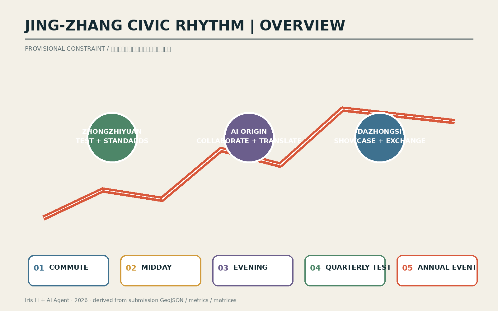
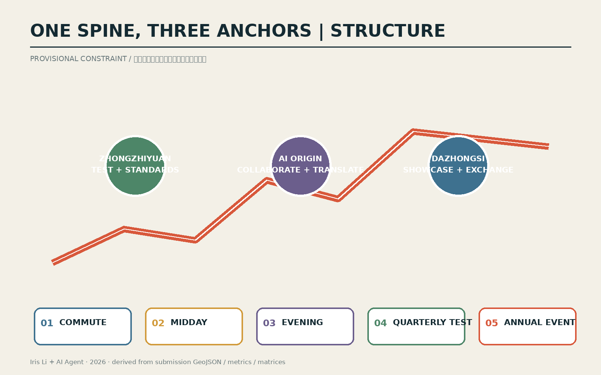
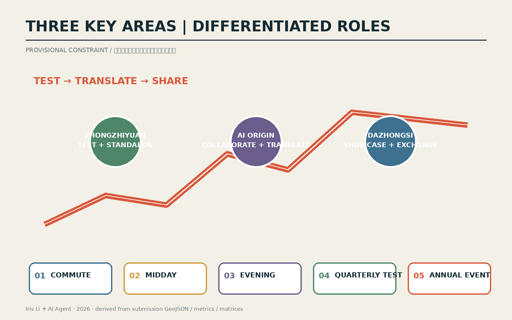
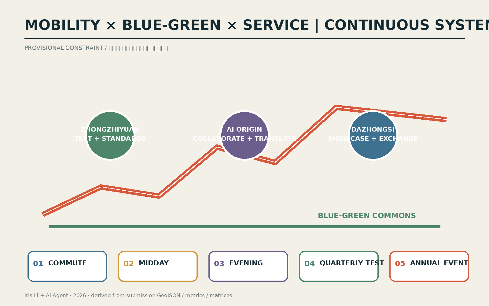
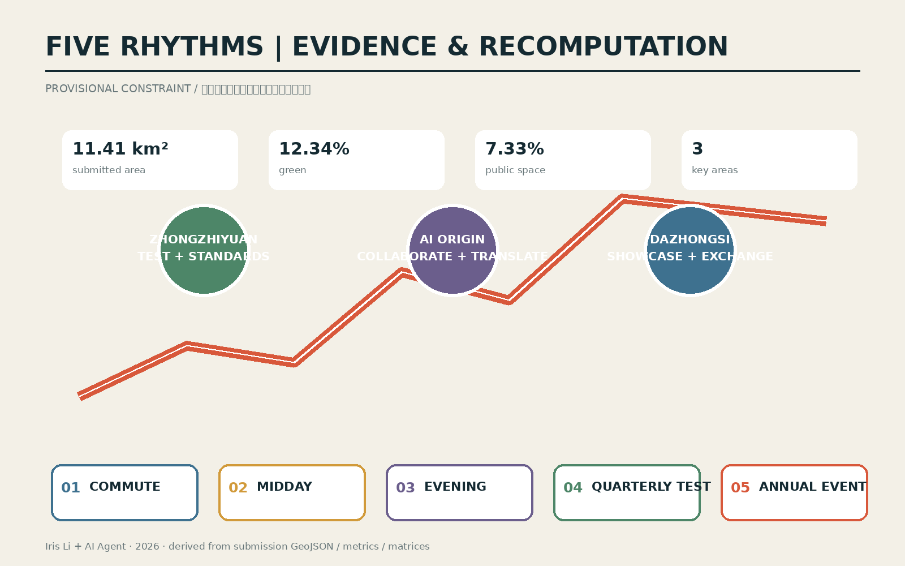

Jing-Zhang Civic Rhythm / 京张节律场
A switchable civic infrastructure using five time protocols to connect three AI innovation anchors along the Jing-Zhang heritage park spine; provisional boundaries are used only for concept generation and review.
Jing-Zhang Civic Rhythm
Design basis and source inventory
This professional AI submission uses the official open-call announcement, the cleared Agent taskbook, the repository source registry, local professional-standard snapshots and the provisional geometry package. The provisional site and key-area polygons are explicitly unsuitable for statutory controls, precise redlines or approval claims; every affected layer and metric must be recalculated when official polygons arrive 来源 来源 空间数据.

Core proposition: a legible time structure for the innovation belt
Jing-Zhang Civic Rhythm treats AI innovation as shared civic infrastructure rather than a collection of enclosed campuses. The heritage park forms a continuous public spine. Zhongzhiyuan is the testing and standards anchor; Beijing AI Origin Community is the open-source collaboration and translation anchor; Dazhongsi is the urban showcase, consumption and international-exchange anchor. Five protocols share the same spaces: weekday commute, midday exchange, evening neighborhood, quarterly testing and an annual global event. Reuse prevents event-only construction and makes every investment useful on ordinary days 空间数据 空间数据 深度.
Railway history is interpreted as the history of coordinating urban life through time. The contemporary proposal replaces train timetables with transparent schedules for access, service intensity, testing and civic events. Provisional geometry stays low-contrast; the design subject is the relationship among spine, anchors, users and operating protocols 来源 深度.
Three-level scope framework
At the coordinated research scale, the proposal aligns universities, companies, open-source communities and civic services. At the overall design scale it maps land use, renewal, mobility, blue-green space and infrastructure. At the three key areas it specifies differentiated programs, public-space moves, test scenarios and dependencies. This transmission from strategy to verifiable geometry is recorded in the compliance matrix 标准 空间数据 深度.

Coordinated research area: industry and future city
The ecosystem links research, open collaboration, enterprise translation, public experience and international communication. Five functions—research, testing, enterprise service, civic experience and global exchange—are distributed across the three anchors and two connective wings. The identity system uses a railway-derived pulse line and five rhythm colors; it is a participant-authored reference identity, not an official brand 标准 来源 深度.
Overall design area: renewal and regulatory-depth urban design
The land-use partition covers the submitted boundary without gaps or overlaps. A slow-mobility and service spine connects mixed innovation, commercial service, community support and open-space zones. Building footprints are conceptual renewal evidence, while FAR, height, setbacks, road redlines and demolition decisions remain pending official planning, ownership and engineering information 标准 空间数据 指标 深度.
Detailed design of the three key areas
Zhongzhiyuan combines a blue-green research commons with bookable safety, standards and low-carbon testing. Beijing AI Origin Community stitches campus, incubator and neighborhood through an open-source hall, translation street and talent services. Dazhongsi uses station-linked pedestrian connections, an urban demo room and international event capacity. Each is a conceptual reference scheme subject to official geometry and professional deepening 空间数据 空间数据 空间数据 深度.

AI ecosystem, personas and scenario cards
Five personas guide the spatial program: open-source developer, start-up team, enterprise visitor, nearby resident and university researcher. Ten cards cover an open-source release hall, safety-governance sandbox, edge-compute stop, explainable mobility guide, international demo room, low-carbon innovation corridor, campus translation street, data-governance room, AI life-service street and annual event route. Three test families—mobility, public-service interface and industrial model/terminal evaluation—require booking, minimum data collection, visible human review and an exit path 来源 空间数据 指标.
Land use, building scale and retain-renovate-replace logic
Land-use terminology follows the national classification reference. The current geometry is a design partition rather than an approved land-use plan. Retain, renovate, replace and new-build decisions can only be assigned after surveys, ownership, heritage, structural and planning information are supplied 标准 空间数据 深度.
Mobility, rail, utilities and public services
The rhythm spine prioritizes walking, cycling, universal access and rail interchange. Mobility information remains advisory and explainable; essential services retain staffed alternatives where applicable. Utility, drainage, fire, energy and edge-compute proposals are capacity hypotheses pending engineering verification 空间数据 标准 深度.

Blue-green space, public realm and character
The heritage park, Qinghe interface and local open spaces form the environmental and cultural armature. Quiet daily use is the baseline; temporary installations and annual events must be reversible. Railway memory, Zhongguancun innovation culture and an accountable AI culture are joined through the rhythm line, contribution markers and three pilgrimage nodes 空间数据 指标 标准 深度.
Renewal projects, policy and phasing
Phase 1 tests wayfinding, slow-mobility repairs and lightweight service points. Phase 2 deepens the three anchors after formal controls and engineering studies. Phase 3 links annual global programming to a permanent community operating model. The six reference projects are the heritage-spine gap repair, Zhongzhiyuan river interface, Origin translation street, Dazhongsi four-quadrant connection, staffed AI service/edge-compute nodes and the annual civic route 空间数据 深度.
Metrics, recomputation and compliance
Known spatial metrics are recomputed from the submitted GeoJSON. Unknown statutory controls remain null rather than being invented. The evidence layer separates geometry, metrics, professional standards, design depth and task coverage from the human narrative 指标 指标 深度.

Risk, copyright and official-claim boundary
This proposal does not claim planning approval, final ownership, engineering feasibility, official branding, confirmed investment or implementation. Original diagrams and narrative are credited to Iris Li + AI Agent. Official and repository sources retain their stated provenance. The offline HTML contains no tracking or remote dependencies. Official boundaries, detailed planning controls, surveys, heritage status, transport, utilities, fire safety, accessibility and event permits remain professional follow-up items 来源 来源 深度.